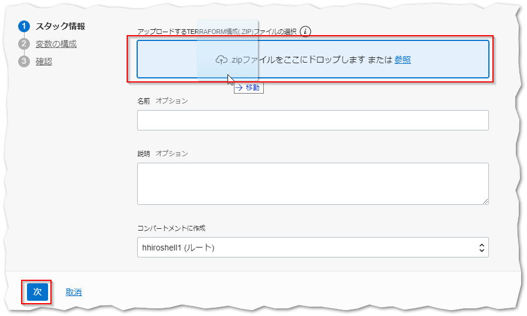
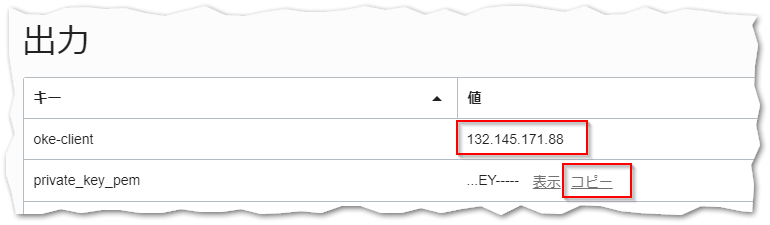
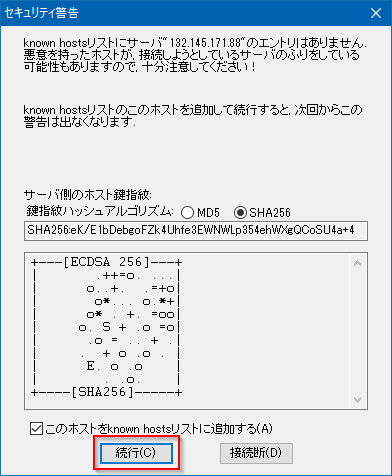
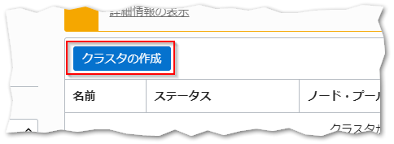
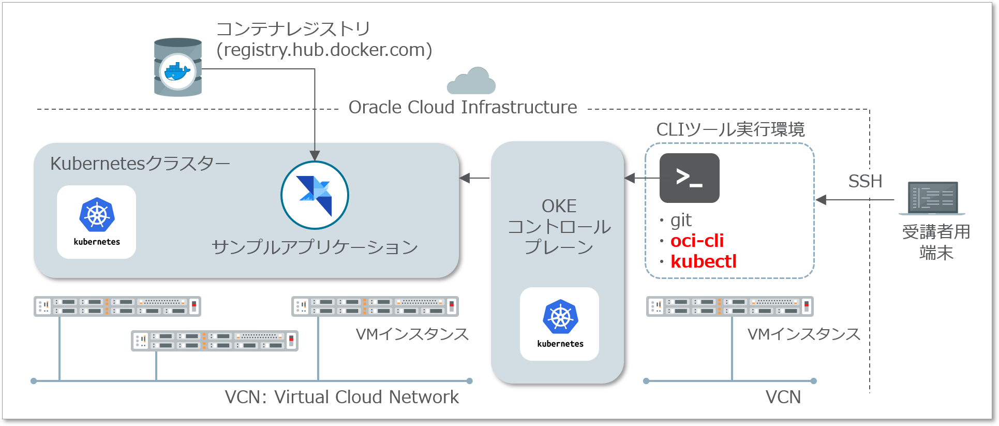

OKE Quick Start 30分¶
Oracle Container Engine for Kubernetes（以下OKE）は、OracleのマネージドKubernetesサービスです。
このハンズオンでは、Oracle Cloud環境とOKEを使って、Kubernetesクラスターの作成とサンプルアプリケーションのデプロイ、及びアプリケーションに対する簡単な運用オペレーションを体験いただくことができます。
前提条件¶
- クラウド環境
- Oracle Cloudのアカウントを取得済みであること
- ローカルPC
- 任意のSSHクライアントが実行可能であること
Note
このドキュメントでは、ローカルPCとしてWindows上にTera Termをインストールした環境を想定して手順を記します。
全体の流れ¶
手順の大まかな流れは以下のとおりです。
- 準備作業
- OKEクラスターのプロビジョニング
- コマンドラインツールのセットアップ
- Kubernetesの基本的な操作を体験する
0 . ハンズオン完了後のゴールを確認する¶
はじめに、このハンズオンを最後まで実施したときにどのような環境が作られるか確認して、ゴールの全体像を掴んでおきましょう。手順を最後まで行うと、下図のような環境が構成されます。

| 構成要素 | 説明 |
|---|---|
| Kubernetesクラスター | アプリケーションのコンテナが稼働するクラスター本体です。OKEをプロビジョニングすると、Oracle Cloudの各種IaaS上に自動的に構成されます。 |
| OKEコントロールプレーン | KubernetesのMaster Nodeに相当するマネージドサービスです。OKEをプロビジョニングすると利用するクラスター専用のコントロールプレーンが払い出されます。クラスターに対する管理操作はコントロールプレーンを経由して実行します。 |
| CLIツール実行環境 | このハンズオンを実施するためのクライアント環境です。Oracle Cloud上にVMインスタンスをプロビジョニングし、ここからクラスターを操作する等の各種手順を実行いただきます。 |
| コンテナレジストリ | コンテナイメージを保存するレポジトリです。このハンズオンでは、あらかじめコンテナレジストリに格納しておいたコンテナイメージを利用します。Oracle Cloudにはコンテナレジストリのサービスもありますが、ここでは手順の簡単のためにDocker Hubを利用します。 |
1 . 準備作業¶
ここでは、OKEを利用する上で前提となるクラウド環境の各種設定と、CLIツール実行環境のセットアップを行っていきます。
1-1. Resource Managerを利用して環境を構築する¶
本節での作業は、OCIのResource Managerと呼ばれるサービスを使って実施します。手作業でVMインスタンスの作成、CLIツールのインストールなどを行うこともできますが、Resource Managerを利用することでこれらの手順を自動化・省力化することが可能です。
Resource Managerとは
Resource Managerは、テキストで記述した構成情報に基づいて、Oracle Cloud上の複数のリソースをまとめて作成/変更/削除することができる、構成管理サービスです。Resource ManagerではTerraformの形式で構成情報を記述します。
1-1-1. スタックの作製¶
Resource Managerを利用するには、構成情報を記述したテキストファイルを作成し、それらをzipアーカイブにまとめておく必要があります。このハンズオン用のResource Managerアーカイブは既に作成済みですので、ブラウザで ハンズオンキットのReleaseにアクセスしてダウンロードします。
oke-handson-prerequisites.zipというファイルをダウンロードしてください。
次に、クラウド環境のテナンシ情報を収集しておきます。これは後の手順でResource Managerを実行するときに必要になります。
Oracle Cloudのコンソールで画面右上の人型のアイコンをクリックし、さらにテナンシ:[テナント名]を選択します。
テナンシの詳細情報が表示されたら、OCIDという項目にあるコピーをクリックします。
これでテナンシの識別子がクリップボードにコピーされました。この情報は後で利用するため、テキストエディタにペーストするなどして控えておいてください。
次に、画面左上のハンバーガーメニューを展開し、リソース・マネージャを選択します。
リソース・マネージャの画面で、スタックの作成をクリックします。

スタックはリソース・マネージャ サービスによって管理されるTerraformコマンドの実行環境です。ここでResource Managerアーカイブをアップロードしてスタックを作成することで、アップロードされたTerraformテンプレートの実行環境がクラウド上に構成されます。
スタックの作成画面で、.zipファイルをここにドロップします または 参照と表示された領域にダウンロードしたResource Managerアーカイブをドロップし、その後次をクリックします。

次に、TENANCY_OCIDとCOMPARTMENT_OCIDに、前の手順で控えていおいたテナンシのOCIDをペーストします。
また、REGIONに環境を構成するデータセンター・リージョンを記載します。通常は画面右上に表示されている、現在選択中のリージョンを記述すれば問題ありません。
以上の入力が完了したら、次をクリックします。
Note
Oracle Cloud Infrastructureは、北米、東京を含む多数のデータセンターを利用可能です。このハンズオンではアカウント作成時に設定されたホームリージョンのまま、手順を進めていきます。
入力内容の確認画面が表示されますので、作成をクリックしてスタックの作製を実行します。
スタックの作製が完了すると、作成済みのスタックの詳細画面が表示されます。

1-1-2. ジョブの実行¶
それでは実際にスタックを実行して環境の構成を行っていきます。
スタックの詳細画面でTerraformアクションメニューを展開し適用をクリックします。

「適用」ダイアログで適用をクリックします。
これで、ハンズオンに必要な構成を行うジョブが開始されます。
ジョブの完了には数分程度かかりますが、その間、ログに表示される内容を確認してみてください。Resource Managerはクラウドの環境内でTerraformを実行しており、その結果として標準出力に出力される内容がログに表示されます。

ジョブの状態が「成功」になったら、正常にジョブが完了しています。

1-2. CLIツール実行環境にログインする¶
ジョブの実行が完了したら、実際にCLIツールの実行環境に接続してみましょう。画面左下にある出力をクリックしてください。

ここでは、ジョブを実行した結果作られたリソースに関連する情報を、確認することができます。ここまで正常に完了していれば、oke-clientとprivate_key_pemという情報が表示されているはずです。これらは、それぞれCLIツール実行環境のIPアドレスとSSH秘密鍵です。

oke-clientは、値をテキストファイルにコピー＆ペーストするなどして控えておいてください。
private_key_pemの値は、コピーという部分をクリックするとクリップボードに値が保存されます。こちらは、新たにテキストエディタを起動してペーストし、「privatekey.pem」というファイル名で保存しておいてください。

次に、デスクトップにあるTera Termのショートカットアイコンをダブルクリックし、Tera Termを起動します。「Tera Term: 新しい接続」というダイアログが表示されたら、ホストに上の手順で控えたIPアドレスを入力し、OKをクリックします。

「セキュリティ警告」というダイアログが表示されたら、何も変更せずに続行をクリックします。

「SSH認証」というダイアログが表示されたら、以下のように値を設定してOKをクリックします。
| 項目 | 入力値 |
|---|---|
| ユーザー名 | opc |
| ラジオボックスの選択 | RSA/DSA/EDCSA/ED25519を使うをオンにし、上の手順で保存した秘密鍵のファイルを(privatekey.pem)を選択する。 |
| （上記以外） | （デフォルトのまま） |

CLIツール実行環境への接続が成功すると、以下のようなコンソール出力が表示されます。
Last login: Fri Aug 2 04:21:15 2019 from 156.151.8.3
[opc@oke-client ~]$
ハンズオンに必要なCLIツールはこの時点でインストール済みですので、例えば以下のようなコマンドを実行することが可能です。
kubectl version --client --short
以下のような結果となれば、kubectlは正常にインストールされています。
Client Version: v1.15.1
上記は、kubectl（Kubernetesの管理用のコマンドラインツール）の、バージョン情報を表示するコマンドとその結果です。
以上で、ハンズオンの準備作業は完了です。
2 . OKEクラスターのプロビジョニング¶
ここでは、OKEクラスターのプロビジョニングを行います。ここでの手順を実施することにより、OKEのコントロールプレーンとKubernetesクラスターの構築が同時に行われます。
はじめに、Oracle Cloudのコンソール画面左上のハンバーガーメニューを展開し、開発者サービスを選択します。

クラスタ一覧画面で、クラスタの作成をクリックします。

「クラスタの作成」ダイアログでは、全てデフォルトのまま作成をクリックします。
デフォルトの設定では、クラスタが必要とするネットワークリソース等の構成が自動的に行われます。途中経過がダイアログに表示されますので、「クラスタと関連ネットワーク・リソースが作成されました」というメッセージが表示されるまで待った後、Closeボタンをクリックします。

クラスタの詳細画面表示されたら、クラスタ・ステータスに表示される内容を確認してください。この時点では作成中と表示されますが、プロビジョニングが完了するとアクティブとなります（完了までにはおおよそ5～10分程度かかります）。
受講者の方へ
クラスタが完成するまでの間に次章「3. コマンドラインツールのセットアップ - 3-1-2. OCI CLIのセットアップ」までの手順を進めてください。
3 . コマンドラインツールのセットアップ¶
OKEクラスターを利用するには、以下の2つのコマンドラインツールを、ご自身の環境に接続できるようにセットアップしておく必要があります。
| ツール | 説明 |
|---|---|
| OCI CLI | Oracle Cloud InfrastructureのCLIツールです。本ハンズオンでは、OKEクラスタとの接続情報を取得するために利用します |
| kubectl | Kubernetesの各種管理操作を行うためのCLIツールです。OKEはオープンソースのKubernetesクラスターがそのまま動作しますので、一般的なCLIツールをそのまま利用することができます。本ハンズオンでもクラスターの操作にはkubectlを使用します。 |

以下、2つのCLIツールのセットアップを順次行っていきます。
3-1. OCI CLIをセットアップする¶
ここでは、OCI CLIのセットアップを行います。
3-1-1. ユーザーのOCIDの確認¶
OCI CLIのセットアップでは、CLIをどのユーザーアカウントとして実行するかを設定するために、ユーザーのOCID（識別子）が必要になります。はじめに、このユーザーのOCIDを取得しておきます。
Oracle Cloudのコンソール画面左上のハンバーガーメニューを展開し、アイデンティティを選択します。

登録されているユーザーアカウントの一覧が表示されますので、ログイン中のアカウントに当たるエントリーを見つけてください。該当するエントリーのOCIDの右側にあるコピーをクリックすると、識別子がクリップボードにコピーされます。
この値は後の手順で利用しますので、テキストエディタにペーストするなどして控えておいてください。
3-1-2. OCI CLIのセットアップ¶
それでは、OCI CLIのセットアップを行います。Tera TermでCLIツール実行環境にログインし、以下のコマンドを実行してください。
oci setup config
セットアップをおこなうためのインタラクションが開始されますので、提示される質問に対して、下表のように入力してください。
| 質問 | 応答操作 |
|---|---|
| Enter a location for your config [/home/opc/.oci/config] | なにも入力せず[Return] |
| Enter a user OCID | 先の手順で確認したユーザーのOCIDを入力 |
| Enter a tenancy OCID | 先の手順で確認したテナンシのOCIDを入力 |
| Enter a region (e.g. ap-mumbai-1, ap-seoul-1, ap-tokyo-1, ca-toronto-1, eu-frankfurt-1, uk-london-1, us-ashburn-1, us-gov-ashburn-1, us-gov-chicago-1, us-gov-phoenix-1, us-langley-1, us-luke-1, us-phoenix-1) | CLIツール実行環境の作成時に指定したリージョンを入力 |
| Do you want to generate a new RSA key pair? (If you decline you will be asked to supply the path to an existing key.) [Y/n] | Y + [Return] |
| Enter a directory for your keys to be created [/home/opc/.oci] | なにも入力せず[Return] |
| Enter a name for your key [oci_api_key] | なにも入力せず[Return] |
| Enter a passphrase for your private key (empty for no passphrase) | なにも入力せず[Return] |
CLIからOracle Cloud環境の操作をおこなう際は、コマンドの実行の度に認証が行われます。この認証のための鍵はあらかじめOracle Cloud上のユーザーアカウントに設定しておく必要があります。
上記のOCI CLIのセットアップの中で鍵ペアが作成されていますので、公開鍵をユーザーアカウントに設定していきます。
まず、Tera Termで以下のコマンドを実行し、公開鍵を表示しておきます。
cat ~/.oci/oci_api_key_public.pem
続いてコンソールに移り、ログイン中のユーザーアカウントのアカウント名部分をクリックしてください。
ユーザーの詳細画面をスクロールして公開キーの追加をクリックします。

「追加 公開キー」ダイアログの入力欄に、先ほとTera Termに表示した公開鍵をペーストし、追加ボタンをクリックします（-----BEGIN PUBLIC KEY-----と-----END PUBLIC KEY-----の行も含めてペーストします）。

以上でOCI CLIのセットアップは完了です。
3-2. kubectlをセットアップする¶
次に、kubectlのセットアップを行って実際にクラスターにアクセスしてみます。
Oracle Cloudのコンソール画面左上のハンバーガーメニューを展開し、開発者サービスを選択します。

先の手順で作成しておいたcluster1の名前をクリックします。

受講者の方へ
ここからの手順を進めるには、OKEクラスターのプロビジョニングが完了している必要があります。クラスターの詳細画面で、クラスタ・ステータスがアクティブとなっていることを確認してください。まだ作成中だった場合には、ステータスが変わるまで少しお待ち下さい。
クラスターの詳細画面で、Kubeconfigへのアクセスをクリックします。

「Kubeconfigへのアクセス方法」ダイアログに、kubetctlの設定ファイルを取得するためのコマンドが表示されますので、これらを順次実行していきます。
1つ目のコマンドは、設定ファイルを格納するためのディレクトリの作成です。
mkdir -p $HOME/.kube
2つ目のコマンドは、OCI CLIの設定ファイル取得用のコマンドを実行しています（以下の例はダミーの値で埋めたものですので、実際のコマンドはダイアログからコピーしてください）。
oci ce cluster create-kubeconfig --cluster-id ocid1.cluster.oc1.iad.xxxxxxxxxxxxxxxxxxxxxxxxxxxxxxxxxxxxxxxxxxxxxxxxxxxxxxxxxxxx --file $HOME/.kube/config
Note
kubectlコマンドはデフォルトで$HOME/.kube/configというパスのファイルを読み込む仕様になっています。設定ファイルの名前や配置先を変更したい場合には、上記2つのコマンドのオプションを変更した上で、kubectlが指定のパスのファイルを読み込むように設定する必要があります。
詳細は、kubectlコマンドに関する 公式ドキュメントの記載を参照ください。
最後に、以下のコマンドを実行して、kubectlの動作確認をしてみます。
kubectl get nodes
以下のような実行結果になれば、正常にクラスターにアクセスできています。
NAME STATUS ROLES AGE VERSION
10.0.10.2 Ready node 20s v1.12.7
10.0.11.2 Ready node 47s v1.12.7
10.0.12.2 Ready node 47s v1.12.7
以上で、OKEでKubernetesクラスターをプロビジョニングし、利用を開始するまでの手順は完了です。
4 . Kubernetesの基本的な操作を体験する¶
ここまでの手順で、OKEでKubernetesクラスターを利用し始めるまでの準備が完了しました。ここからは、簡単なサンプルアプリケーションを使ってKubernetes上でコンテナを管理する基本的な操作を体験します。
4-1. サンプルアプリケーションのデプロイ¶
まず、Kubernetesクラスター上にサンプルアプリケーションをデプロイして、動作確認してみます。
4-1-1. manifestファイルを取得する¶
Kubernetesクラスターにアプリケーションをデプロイするには、manifestと呼ばれるファイルに構成情報を記述し、それをクラスターに適用するという流れが通常ですが、ここでは、あらかじめ作成済みのmanifestファイルを利用します。
まず、作成済みのmanifestファイルをCLIツール実行環境に取得するため、以下のコマンドを実行してください。
git clone https://github.com/oracle-japan/cowweb-for-wercker-demo.git
上記コマンドでできたディレクトリをカレントにしておきます。
cd cowweb-for-wercker-demo
4-1-2. アプリケーションをデプロイする¶
それでは、いよいよOKEクラスターにアプリケーションのコンテナをデプロイします。
OKEを始めとして、Kubernetesのクラスターにコンテナをデプロイするには、クラスター上の配置情報をmanifestと呼ばれるファイルに記述しておく必要があります。
サンプルアプリケーションのコードには作成済みのmanifestファイルが含まれていますので、その内容を確認してみます。以下のコマンドを実行してください。
cat ./kubernetes/cowweb.yaml
1 2 3 4 5 6 7 8 9 10 11 12 13 14 15 16 17 18 19 20 21 22 23 24 25 26 | |
このファイルによって、サンプルアプリケーションのコンテナが、クラスター上にどのように配置されるかが定義されています。例えば、6行目にあるreplicas:2という記述は、このコンテナが、2つ立ち上げられて冗長構成を取るということを意味しています。
Note
実際にKubernetes上でコンテナが動作する際には、Podと言われる管理単位に内包される形で実行されます。上記のmanifestでは、サンプルアプリのコンテナを内包するPodが、2つデプロイされることになります。
20行目には、実際にクラスター上で動かすコンテナイメージが指定されています。
次に、cowweb-service.yamlというmanifestファイルの内容を確認してみます。
cat kubernetes/cowweb-service.yaml
1 2 3 4 5 6 7 8 9 10 11 12 | |
このmanifestファイルは、クラスターに対するリクエストのトラフィックを受け付ける際のルールを定義しています。type: LoadBalancerという記述は、クラスターがホストされているクラウドサービスのロードバランサーを自動プロビジョニングし、そのLBに来たトラフィックをコンテナに届けるという意味です。
それでは、Kubernetes上でサンプルアプリケーションのコンテナを動かしてみます。以下のコマンドを実行してmanifestファイルをクラスターに適用し、PodやServiceをクラスター内に作成します。
kubectl apply -f ./kubernetes/cowweb.yaml
kubectl apply -f ./kubernetes/cowweb-service.yaml
以下のコマンドを実行すると、リソースの構成が完了しているかどうかを確認することができます。
kubectl get pod,service
すべてのPodのSTATUSがRunnigであることと、cowwebという名前のServiceがあることが確認できれば、リソースの作成は完了です（ServiceのEXTERNAL-IPは、ロードバランサーが実際に作成されるまで表示されません。その場合は少し時間を置いて上記コマンドを再実行してください）。
NAME READY STATUS RESTARTS AGE
pod/cowweb-67657b78bc-gdpmp 1/1 Running 0 6s
pod/cowweb-67657b78bc-rnkmf 1/1 Running 0 6s
NAME TYPE CLUSTER-IP EXTERNAL-IP PORT(S) AGE
service/cowweb LoadBalancer 10.96.226.194 150.136.201.41 80:30691/TCP 88m
service/kubernetes ClusterIP 10.96.0.1 <none> 443/TCP 3h18m
上の例では、IPアドレス150.136.201.41の80番ポートでロードバランサーが公開されており、ここにリクエストを送信するとアプリケーションにアクセスできることを意味しています。このIPアドレスをテキストエディタ等に控えておいてください。
これでクラスターへのデプロイは完了しましたので、実際に動作確認してみます。以下のコマンドを実行してください。
curl "http://[ロードバランサーのIP]/cowsay/say"
以下のようなアスキーアートが表示されれば、アプリケーションが正常に動作しています。
______
< Moo! >
------
\ ^__^
\ (oo)\_______
(__)\ )\/\
||--WWW |
|| ||
4-2. アプリケーションのスケールアウト¶
ここでは、Deploymentのレプリカ数の値を変更することによって、Podのスケールアウトを試してみます。
4-2-1. スケールアウト¶
Deploymentに対してレプリカの数を指定することによって、そのDeploymentが管理するPodの数を増減することができます。
まず、テキストエディタで./kubernetes/cowweb.yamlを編集し、replica数を4に変更してください。
vim ./kubernetes/cowweb.yaml
1 2 3 4 5 6 7 8 9 10 | |
編集が完了したら、manifestファイルを再度クラスターに適用します。
kubectl apply -f ./kubernetes/cowweb.yaml
以下のコマンドを実行してPodの一覧を表示してみると、4つのPodが構成されていることがわかります。
kubectl get pods
NAME READY STATUS RESTARTS AGE
cowweb-67657b78bc-gdpmp 1/1 Running 0 2m38s
cowweb-67657b78bc-r66l5 1/1 Running 0 13s
cowweb-67657b78bc-rnkmf 1/1 Running 0 2m38s
cowweb-67657b78bc-vpjwg 0/1 Running 0 13s
上の例では、一部のPodは起動中の状態です。少し時間が経過すると全てのPodのSTATUSがRunningになります。
4-2-2. Serviceによるルーティングの様子の確認¶
この時点で、クラスターには4つのcowwebのPodがデプロイされている状態です。この状態で、Podに対するアクセスが負荷分散される様子を確認してみましょう。
このサンプルアプリケーションには、環境変数の変数名を指定するとその値を答えてくれるという仕掛けがしてあります。これを利用してPodのホスト名を応答させることで、負荷分散の動きを見てみます。
動作確認で実行したcurlコマンドのURLに?say=HOSTNAMEというクエリを追加して、以下のようなコマンドを実行してみてください。
curl "http://[ロードバランサーのIP]/cowsay/say?say=HOSTNAME"
このコマンドを何度か繰り返すと、その度に異なるホスト名が返ってくることがわかります。
_________________________
< cowweb-67657b78bc-rnkmf >
-------------------------
\ ^__^
\ (oo)\_______
(__)\ )\/\
||----w |
|| ||
_________________________
< cowweb-67657b78bc-gdpmp >
-------------------------
\ ^__^
\ (oo)\_______
(__)\ )\/\
||----w |
|| ||
4-3 . アプリケーションの更新¶
ここでは、Deploymentのコンテナイメージのバージョン情報を変更することによって、アプリケーションのローリングアップデートを行ってみます。
4-3-1. ローリングアップデート¶
コンテナレジストリには新しいバージョンのコンテナイメージをアップロード済みですので、manifestファイルで指定するコンテナイメージを変更し、クラスターに適用するだけで、バージョンアップを行うことができます。
テキストエディタで./kubernetes/cowweb.yamlを編集し、コンテナイメージのバージョンをv1.1に変更してください。
vim ./kubernetes/cowweb.yaml
1 2 3 4 5 6 7 8 9 10 11 12 13 14 15 16 17 18 19 20 21 22 23 24 25 26 | |
編集が完了したら、manifestファイルを再度クラスターに適用します。
kubectl apply -f ./kubernetes/cowweb.yaml
kubectl get podsを繰り返し実行すると、古いPodの削除と新しいPodの作成が徐々に行われていく様子が確認できます。
しばらくして再び4つのPodがRunnnigの状態になったら、以下のコマンドを実行してPodのアップデートの履歴を確認してみましょう。
kubectl describe deployment cowweb
Name: cowweb
Namespace: default
...（中略）...
Events:
Type Reason ... Message
---- ------ ... -------
Normal ScalingReplicaSet ... Scaled up replica set cowweb-67657b78bc to 2
Normal ScalingReplicaSet ... Scaled up replica set cowweb-67657b78bc to 4
Normal ScalingReplicaSet ... Scaled up replica set cowweb-6c9c97d956 to 1
Normal ScalingReplicaSet ... Scaled down replica set cowweb-67657b78bc to 3
Normal ScalingReplicaSet ... Scaled up replica set cowweb-6c9c97d956 to 2
Normal ScalingReplicaSet ... Scaled down replica set cowweb-67657b78bc to 2
Normal ScalingReplicaSet ... Scaled up replica set cowweb-6c9c97d956 to 3
Normal ScalingReplicaSet ... Scaled down replica set cowweb-67657b78bc to 1
出力された内容の最後にEvents:というパートがあり、ここでどのようにPodのアップデートが行われたかを確認する事ができます。
3行目のScaled up replica set cowweb-6c9c97d956 to 1というイベント以降が、ローリングアップデートのために発生した一連のイベントを表しており、新しいバージョンのPodを1つ足すごとに、古いバージョンのPodを1つ減らすということが繰り返されています。
4-3-2. アップデートされたアプリの動作確認¶
最後に、アップデートされたアプリケーションにアクセスして、結果を確認してみましょう。
curl "http://[ロードバランサーのIP]/cowsay/say"
どのような結果となるでしょうか…？
これで本ハンズオンのコンテンツは全て終了です。お疲れさまでした！